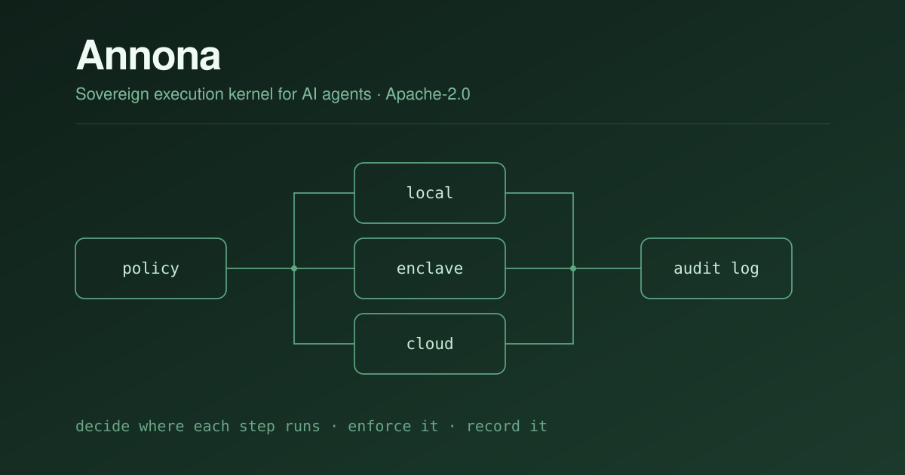

Annona — execution kernel for AI agents Star00
Open source · Apache-2.0 · Python · 2026
A sovereign execution kernel: it decides where each step of an agent runs, enforces that decision, and records it. The point is control and auditability — knowing that a step touching sensitive data ran where it was allowed to, and being able to prove it afterwards.
It grew out of a concrete problem. Agent frameworks will happily send anything anywhere, which is a non-starter the moment you handle clinical or regulated data.